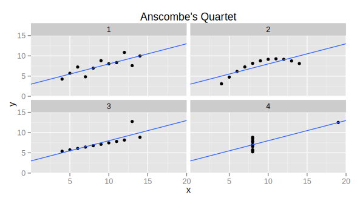

...data scientists [need] to communicate in language that all their stakeholders understand—and to demonstrate the special skills involved in storytelling with data, whether verbally, visually, or — ideally — both.
- DJ Patil and Thomas Davenport, Data Scientist: The Sexiest Job of the 21st Century, Harvard Business Review
...the dominant trait among data scientists is an intense curiosity — a desire to go beneath the surface of a problem, find the questions at its heart, and distill them into a very clear set of hypotheses that can be tested.
- DJ Patil and Thomas Davenport, Data Scientist: The Sexiest Job of the 21st Century, Harvard Business Review
Why is data science "The Sexist Job of the 21st Century"?
Databases:
Relational, noSQL, distributed, graph, in-memory
Dataframes:
samples pandas code to load in data and describe
Plotting
plot
Data Issues: typos, missing data, redundant data, format issues, outliers
Example Data:
Small group discussion
Predictive Analytics and Machine Learning
Supervised learning
Unsupervised learning
Statistical Modeling
Descriptive, Predictive, and Prescriptive Analytics
Supervised Learning
$x^i$
features (input variables)
$y^i$
target (output variable)
$ (x^i, y^i), i=1,\ldots,m $
training set
Goal: learn a function
$$h : \mathcal{X} \rightarrow \mathcal{Y}$$
such that $h(x)$ is a good predictor of $y$ on new data
TODO: wine dataset
features $x$ can be
metric
ordinal
categorical/nominal
target $y$ can be
continuous (regression)
categorical (classification)
diagram of supervised learning
Back to wine...
We have our goal...now what?
Picking a model
List a bunch of models
Model we chose for this data set
Training
Feature engineering
Feature selection
training and test set
cross validation for parameter tuning
overfitting
Results for example
Feature Engineering
TODO: find time series data example, and do a small-group activity to brainstorm features
Testing and Experimentation
“Modern tech companies have figured out that data is their product. Whether you sell a service, a product, or content, what you really do is create value for your customer base — and every interaction with your product is a measurable amount of value. But the best data-driven companies don’t just passively store and analyze data, they actively generate actionable data by running experiments. The secret to getting value from data is testing, and if you’re looking to grow your online business, implementing well-executed, consistent A/B testing is a necessity.”
What is A/B testing?
VS.
What NOT to do
Multi-Armed Bandit
Multivariate Testing
VS.
VS.
VS.
Your company is trying to increase click-through rates, and is trying to determine if a red banner drives more clicks than a blue one. How is this done?
Now you have a prediction, how to test?
framing testing with example
What is A/B testing and why would you need it?
EVERYONE uses A/B testing
examples: Amazon, etc
Types/models for A/B testing
one-armed bandit (epsilon, bayesian bandit)
interactive chart (evan miller blog?)
What NOT to do (evan miller)
don’t stop early
Data Communication and Visualization
Simplify
models, explanations, visuals
Communication is critical for data science
Must be able to communicate a model to a customer/non-technical team
If the model does not get used/implemented, it does not add value
Beware of model complexity
You must be able to explain your model to the CEO
If the model does not get used/implemented, it does not add value
Translate model results into business value/ROI
Create Great Charts
Often the most effective way to describe, explore, and summarize a set of numbers - even a very large set - is to look at a picture of those numbers.
-Edward Tufte
The Visual Display of Quantitative Information
1
2
3
4
x
y
x
y
x
y
x
y
10
8.04
10
9.14
10
7.46
8
6.58
8
6.95
8
8.14
8
6.77
8
5.76
13
7.58
13
8.74
13
12.74
8
7.71
9
8.81
9
8.77
9
7.11
8
8.84
11
8.33
11
9.26
11
7.81
8
8.47
14
9.96
14
8.10
14
8.84
8
7.04
6
7.24
6
6.13
6
6.08
8
5.25
4
4.26
4
3.1
4
5.39
19
12.5
12
10.84
12
9.13
12
8.15
8
5.56
7
4.82
7
7.26
7
6.42
8
7.91
5
5.68
5
4.74
5
5.73
8
6.89

Principles of Data Visualization
Above all else, show the data
Draw attention to the data, not the visualization
TODO: example
Use a minimum of ink
Erase non-data-ink (within reason)
Erase redundant data-ink (within reason)
Forego chartjunk - interior decoration of graphics
TODO:example
TODO: small multiples
Avoid creating graphical puzzles
TODO: example
Do not distort the data
Visual representation should be consistent with the numerical representation
TODO: example
Graphical excellence is that which gives to the viewer the greatest number of ideas in the shortest time with the least ink in the smallest space.
-Edward Tufte
Breathe...
Resources for becoming a data scientist
Programming
Intro to Python GDI class
Statistics / machine learning / math
Coursera
Domain knowledge
Think, talk to people, be proactive, learn as you go
Bonus Material
Hadoop, Map Reduce
Specific learning algorithms: support vector machine, naive bayes, decision tree (classification tree, regression tree), random forest, neural nets, regression (linear, lasso, ridge), logistic regression, recommender systems (collaborative filtering), nearest neighbor, boosting
Clustering
Imbalanced datasets
The next slides are some examples, and we can delete them once we finish the presentation.
This shows how to use math font
Inline math typing looks like this: $\sum_x c_ix_i$
And math typing can be placed on a separate line like this:
function linkify( selector ) {
if( supports3DTransforms ) {
var nodes = document.querySelectorAll( selector );
for( var i = 0, len = nodes.length; i < len; i++ ) {
var node = nodes[i];
if( !node.className ) {
node.className += ' roll';
}
}
}
}
Code syntax highlighting courtesy of highlight.js.
Fantastic Ordered List
One is smaller than...
Two is smaller than...
Three!
Tabular Tables
Item
Value
Quantity
Apples
$1
7
Lemonade
$2
18
Bread
$3
2
Clever Quotes
These guys come in two forms, inline:
“The nice thing about standards is that there are so many to choose from” and block:
“For years there has been a theory that millions of monkeys typing at random on millions of typewriters would
reproduce the entire works of Shakespeare. The Internet has proven this theory to be untrue.”
Speaker View
There's a speaker view. It includes a timer, preview of the upcoming slide as well as your speaker notes.
 Source: http://drewconway.com/zia/2013/3/26/the-data-science-venn-diagram
Source: http://drewconway.com/zia/2013/3/26/the-data-science-venn-diagram